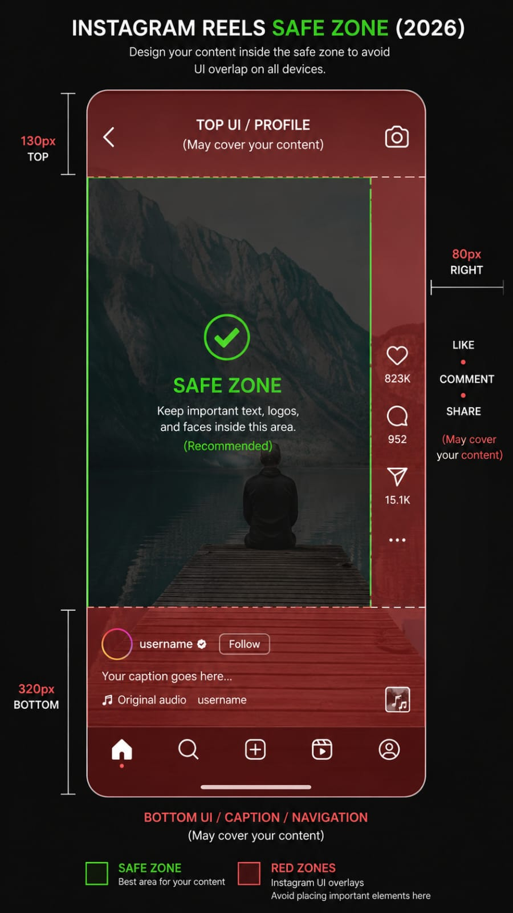

01
Respect the red zone
◆
No caption, no text, no important element may land in the red bands —
on any layer, at any time. Instagram covers those edges with its own interface.

| Zone | Keep clear |
|---|---|
| Top | 250 px |
| Bottom | 380 px |
| Left & right | 120 px each |
| Safe band | y 250 → 1540 |
| Usable width | 840 px |
Measure the bounding box of the text, not the baseline — a descender or a second line sits lower than you think.
- Put a guide layer at all four boundaries and keep it on while you work.
- Check the widest caption in the episode, not the first one.
- A background box counts as part of the element — its edges must stay inside too.
✳
One deliberate exception: the header (rule 08) sits above the 250 px line.
That is intentional and matches the approved episodes — do not move it down to
"fix" it.